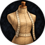

THE WARDROBE IS OPEN
Saurek’s
Closet
Your character, your look.
Preview appearances, shape your character, and save looks. Your gear and stats stay the same.
The wardrobe01 / 07

Saurek’s ClosetTHE WARDROBE IS OPEN
Your character, your look.
Preview appearances, shape your character, and save looks. Your gear and stats stay the same.